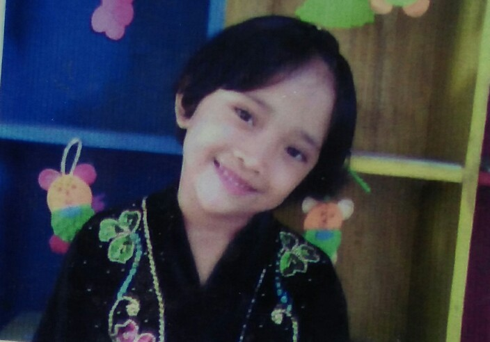
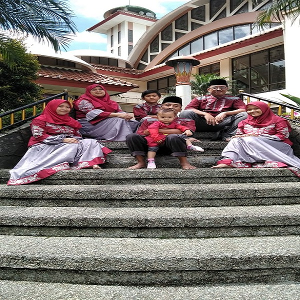

Ratu Khoerunnisa Maulida Gunawan
- My Biodata -
Biodata
Nama saya Ratu Khoerunnisa Maulida Gunawan . Orang - orang biasa memanggil saya Ratu atau Ica. Saya Lahir di Bogor, Jumat, 02 Mei 2003. Rumahnya di Cigombong, Bogor, Jawa Barat. Sekolahnya di TK Nurul Huda, SD NEGERI Cigombong 01, SMP NEGERI 01 Cigombong, dan sekarang di SMK - SMAK Bogor kelas 11. Dulu waktu kelas 10 ngekos di kosan Tutuh, tapi sekarang pulang pergi. Cita - cita saya menjadi dokter. Keluarga saya terdiri dari ayah, ibu, dua kakek, dua nenek, dua adik perempuan, dan satu adik laki - laki.


Kenapa ingin jadi dokter?
PERTAMA
Karena ingin membantu menyembuhkan sakitnya bunda yang udah dari lama. Bercita - cita menjadi dokter sudah sejak kecil dan masih terus sampai sekarang ga berubah.
KEDUA
Karena kalau jadi dokter uangnya banyak jadi bisa cepet - cepet berangkatin ayah bunda ibadah ke tanah suci tapi pake uang sendiri. Juga pengen punya rumah sakit sendiri. Aamiin.
KETIGA
Karena dokter adalah pekerjaan mulia yang bantuin orang lain. Dan mau keluarga sama orang - orang bahagia.